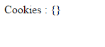
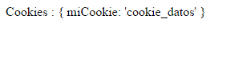

Uso de cookies en express
Para usar cookies es express podemos usar el middleware cookie-parser. Éste nos analiza la cabecera de los cookies y las extrae para guardarlos en el campo req.cookies del objeto que contiene una petición. Su instalación es a través de npm:
npm install cookie-parser --save
Su activación es como cualquier middleware:
var cookieParser = require('cookie-parser');
app.use(cookieParser());
Para crear un cookie podemos simplemente usar res.cookie(nombre, valor [, opciones]), que esperará:
- El nombre que se le dará al cookie
- El valor que tendrá el cookie
- Y opciones adicionales:
- domain
- encode
- expires
- httpOnly
- maxAge
- path
- secure
- signed
- sameSite
Una vez creado un cookie, se puede comprobar su existencia desde el cliente a través de document.cookie.
Para borrar un cookie tenemos la función clearCookie(nombreCookie). A continuación podemos ver como se usan todas estas funcionalidades a través del ejemplo ejemploExpressCookie.js.
En este ejemplo podemos ver que cookies tenemos en la sesión actual, además de poder crear y borralos.
La primera vez que accedamos veremos un objeto que contiene los cookies que en este caso estará vacío.

Para crear un cookie tendremos que acceder a la ruta crear /crear/nombreCookie, que creará un cookie con el nombre que queramos y estará disponible durante 60 segundos. Una vez creado con por ejemplo, /crear/miCookie, se nos redirigirá a la ruta principal y veremos que el objeto que contiene los cookies ahora no esta vacío.

Esto es realizado a través de:
res.cookie(req.params.cookie , 'cookie_datos', {maxAge : 1000 * 60} //60 segundos
).redirect('/');
Para eliminar un cookie podemos acceder a /borrar/nombreCookie y para ello se ejecuta:
res.clearCookie(req.params.cookie);